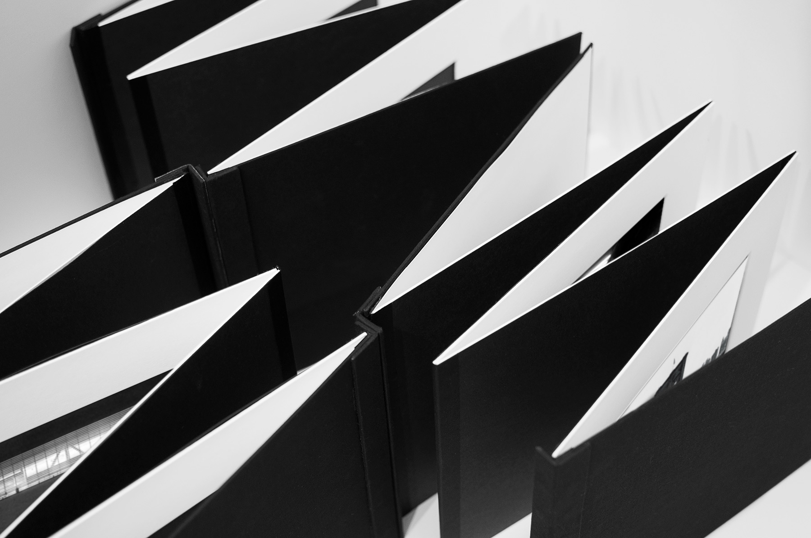
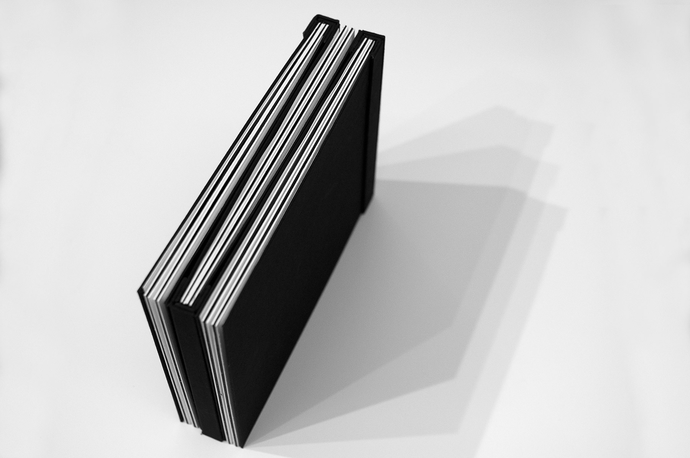
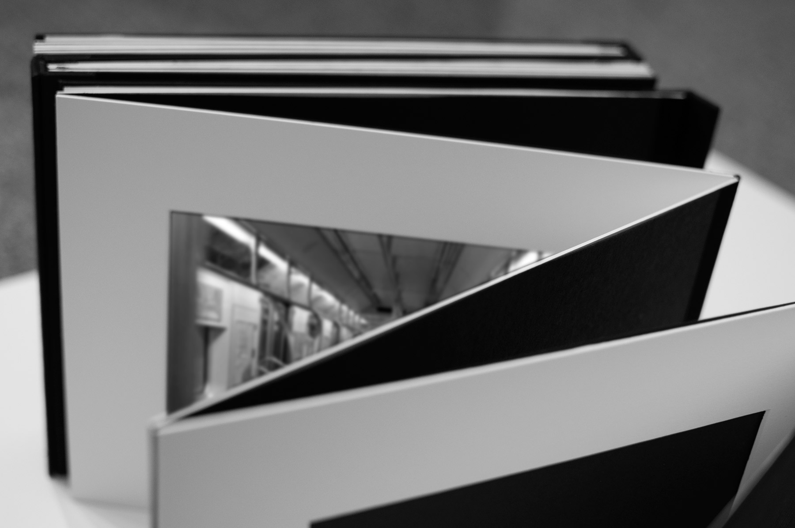
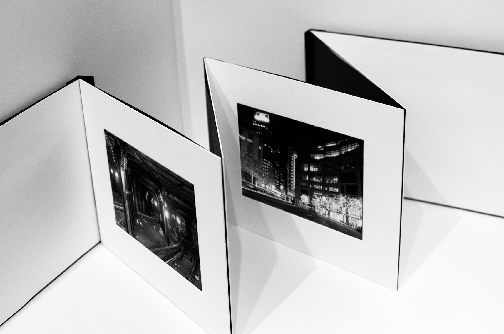

the emptiness
of new york II
artist’s book for an analog photography exhibit
“A book is more than a verbal structure or series of verbal structures; it is the dialogue it establishes with its reader and the intonation it imposes upon his voice and the changing and durable images it leaves in his memory. A book is not an isolated being: it is a relationship, an axis of innumerable relationships.”
― Jorge Luis Borges
For this project, named “the book as a document” I’ve designed three exhibition structures to present my analogue photography project about the New York City’s emptiness.
The covers are finalized with cloth and the binding of the books are made with magnets so that the accordion structure allows it to expand and fix it on metal surfaces.



